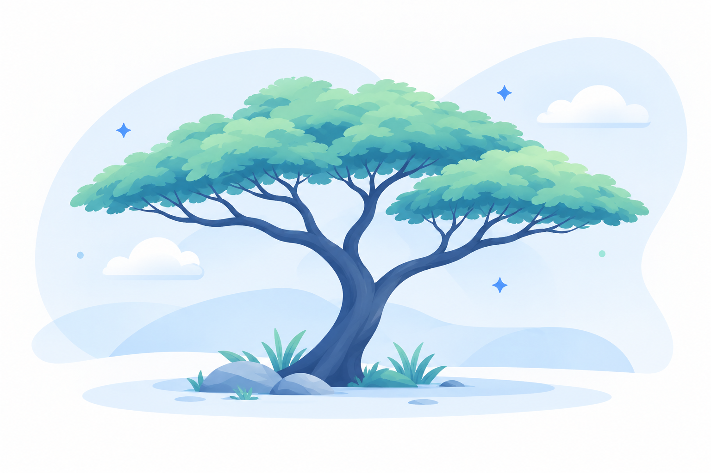

בדיקות תוכנה
היכרות עם בדיקות ידניות, כתיבת תרחישי בדיקה ודיווח באגים.
תיק עבודות אישי
אני מאמינה שבדיקות תוכנה הן חלק בלתי נפרד מפיתוח איכותי. כאן אפשר להכיר אותי, לראות את הכישורים שלי ופרויקטים שעבדתי עליהם.

קוראים לי צאלה, ושם מיוחד כמו שלי מעורר לא פעם סקרנות. צאלה הוא שם עברי שמקורו בעץ הצאלים, ואני אוהבת את העובדה שהוא גורם לאנשים לעצור ולגלות משהו חדש.
אולי זו גם הסיבה שאני כל כך אוהבת לחקור, לגלות דברים חדשים ולהבין איך דברים עובדים. הסקרנות הזו מלווה אותי גם בעולם בדיקות התוכנה — בחיפוש אחר פרטים, בחינת תהליכים וגילוי דרכים לשפר את חוויית המשתמש.
אני הנדסאית תוכנה, עם בסיס בתחום התכנות ועניין רב בעולם בדיקות התוכנה. אני שואפת להמשיך להתפתח בתחום ה-QA, להעמיק את הידע המקצועי שלי ולהשתלב בצוות שבו אוכל ללמוד, לתרום ולהתפתח.
מה אני מביאה איתי
כישורים שאני מפתחת וממשיכה להרחיב לאורך הדרך.
היכרות עם בדיקות ידניות, כתיבת תרחישי בדיקה ודיווח באגים.
ניתוח בעיות, תשומת לב לפרטים וחשיבה שיטתית לפתרון תקלות.
היכרות ולמידה של כלים לתיעוד בדיקות, ניהול תקלות ואוטומציה.
בסיס בתכנות במסגרת הלימודים והיכרות עם עקרונות פיתוח תוכנה.
תקשורת טובה, למידה עצמאית ושיתוף פעולה להשגת מטרות משותפות.
דברים שבניתי ולמדתי
בדיקות תוכנה
כתיבת תרחישי בדיקה, בדיקת תהליכים מרכזיים ותיעוד ממצאים.
צפה בפרויקט ←פיתוח
תיאור קצר של פרויקט שפיתחתי במסגרת הלימודים או באופן עצמאי.
צפה בפרויקט ←אשמח לשמוע מכם
אפשר ליצור איתי קשר דרך הרשתות המקצועיות.